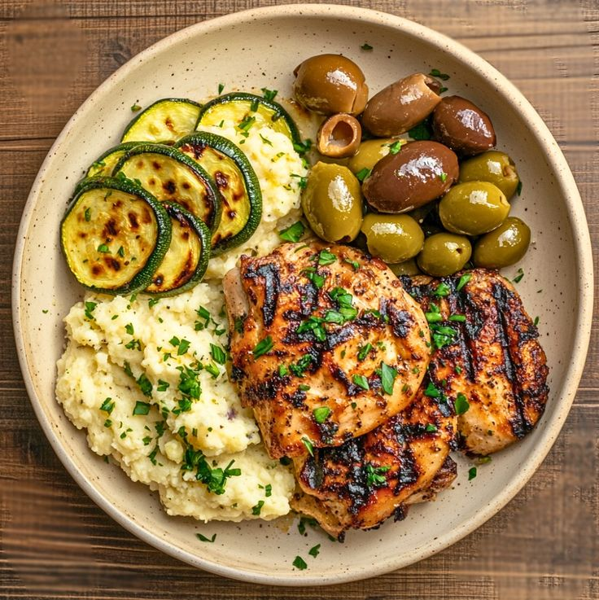

Low-Carb Diet & Blood Sugar

Author: Dr. Daniel Ross
This study examines how low-carb diets can help stabilize blood sugar levels and improve insulin sensitivity.
Research indicates that reducing carbohydrate intake can lead to better glucose control, weight management, and reduced risk of type 2 diabetes.
Practical recommendations, sample meal plans, and additional research will be provided here.